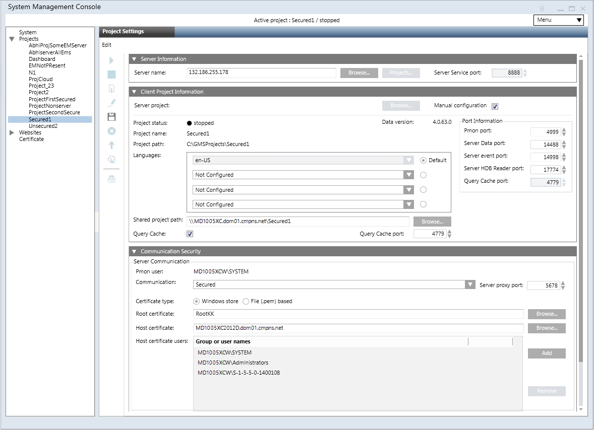

Modify the Client/FEP Project Parameters in Manual Configuration Mode
The Manual configuration mode allows you to freely configure the projects parameters. However, note that the Desigo CC client application on the Client/FEP station will not launch if there is any mismatch between the security configurations of the Server and Client project.
- You have all the required server project details including the Server name, the ports (except Pmon), the shared project path, and the security details.
- Before creating/modifying the Client/FEP project, you need to share the Server project folder with the logged-on user of the Client/FEP operating system.
- On the Client/FEP computer, ensure the following:
— If Windows store certificates are used for securing the Client/Server communication, the root and host certificates are imported in the appropriate certificate store and are set as default.
Only certificates with RSA signature algorithm are supported. CNG certificates are not supported.
— If File (.pem) based certificates are used for securing the Client/Server communication, the root, host and a host key certificates must be available at a known path on the disk. - The project is stopped.
- In the SMC tree, select Projects > [project].
- Click the Project Settings tab.
- Click Edit
 .
. - The Server Information expander is enabled.
- The process monitor user is synched with the System Account user, if it is changed.
- In the Client Project Information expander, select the Manual configuration check box to edit the project in manual mode.
- In the Server Information expander, Projects and Service port are disabled.
- The Client Project Information and the Communication Security expanders are enabled.
- In the Server Information expander, edit the Server name by typing the full computer name of the Desigo CC Server machine, for example, ABCXX022PC.dom01.company.net, or by clicking Browse and selecting the Server machine using the Workstation Picker dialog box.
- In the Client Project Information expander, proceed as follows and edit the information as required:
- Port numbers
- Languages
- Enter a value into the Shared project path field or browse for the Server project that you want to connect to on the selected Server.
NOTE 1: When you save the project changes, the project path is not validated. Hence you must provide the correct shared project path.
NOTE 2: You must enter the server name before browsing for the shared project.
NOTE 3: You can create a project on the Client/FEP without providing the shared project path. However, in this case, the very first project that you create on the Client/FEP will no longer be activated automatically. For project activation providing the shared project path is mandatory. - Clear the Query Cache check box which disables the Query Cache port field.
- The server name, service port, port numbers are changed, language are edited, the process monitor user is changed internally and synched with the current system account user for the selected project. The Shared project path is configured.
- In the Communication Security expander, proceed as follows:
- From the Client/Server communication drop-down list, select the communication mode to match that of the selected Server project. Otherwise, you cannot connect to the Server project.
- (Enabled only when the Client/Server communication mode is Secured) Edit the proxy port, if required.
- (Enabled only when the Client/Server communication mode is Secured) Modify the certificate type, Windows store or File (.pem) based depending on the selected Server project.
- (Enabled only when the Client/Server communication mode is Secured) Click Browse to select the root certificate. By default, it displays the default root certificate set on the Client/FEP. The root certificate must be the same as that of the Server project.
- (Enabled only when the Client/Server communication mode is Secured) Click Browse to select the host certificate. By default, it displays the default host certificate set on the Client/FEP machine. The host certificate must be created using the root certificate selected and must have a private key.
- (Enabled only when the Client/Server communication mode is Secured and the selected Certificate type is File (.pem) based) Click Browse and select the host key certificate.
- (Enabled only when the selected server project has Client/Server communication mode as Secured and the Certificate type is Windows store) Click Add to add a host certificate user using the Select User dialog box. For example, you can add a non-admin user so that a non-admin user can launch the Desigo CC client application.
NOTE 1: Only users and groups listed for the selected host certificate can launch the Desigo CC client application on the Client/FEP computer.
NOTE 2: Even if the logged-on user of the Client/FEP operating system is a member of the Administrators group, and that Administrator group has rights to the private key of the selected host certificate, you still have to assign rights to the logged-on user of the Client/FEP operating system on the host certificate’s private key by adding the user to the Host certificate users list. - The certificates are configured for the selected certificate type.
- Click Save Project
 .
. - A message displays prompting you to re-activate the modified project.
- Click OK.
- Click Activate Project
 .
. - Click Start
 .
.
- You can now work with the Desigo CC client application on the Client/FEP station. Desigo CC will run in the context of the active project on the Client/FEP.

Special Considerations when Applying Security for Closed Mode Configuration
- You must provide permissions to the Closed mode user (GMSDefaultUser) on the private key of the host certificate configured for the client/server communication. This must be done even if the Closed mode user (GMSDefaultUser) is a member of the Administrators group and that Administrator group has rights on the private key of the host certificate.
- If you are configuring Closed mode on the client/FEP, then you must also provide file-system access rights to the GMSDefaultUser of the client/FEP on the project folder on the server.